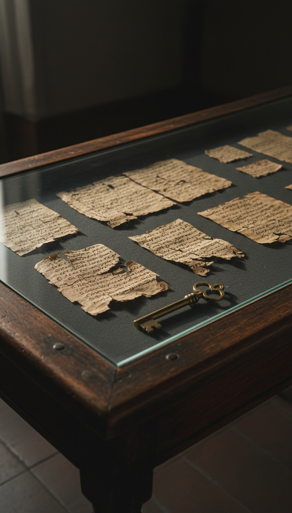

The Vatican holds a second copy of the Gospel of Judas, according to Mario Roberty, the Swiss lawyer whose Maecenas Foundation for Ancient Art in Basel rescued the only known copy. Roberty has said it is highly logical that the Church kept copies of the gospels it banned, and he points at the Vatican as the place where a copy of Judas sits securely locked away. For years he says the Vatican has given one answer: no further comment.
The copy the public can read nearly died before anyone translated it. It spent sixteen years in a Long Island bank box, went into a dealer's freezer and broke into more than a thousand pieces. A copy inside the oldest archive on Earth never went through any of that. It has had climate control, guards and silence for as long as the Church has existed.

The Man Who Saved The First Copy
Mario Roberty is the lawyer behind the Maecenas Foundation for Ancient Art, based in Basel, Switzerland. In 2001 his foundation took legal control of a crumbling papyrus book called the Codex Tchacos, named for the antiquities dealer Frieda Tchacos Nussberger. Inside it was the only surviving text of the Gospel of Judas.
The foundation paid for the rescue. It brought in Coptic scholar Rodolphe Kasser, conservator Florence Darbre and Coptologist Gregor Wurst to rebuild the book in Geneva. Five years later the world read the gospel for the first time in roughly seventeen centuries.
That gives Roberty standing nobody else has. He handled the only copy, he paid to bring it back, and he knows how this text moves through the world. When that man says the Vatican has another copy, he is speaking from inside the trade.
Sixteen Years In A Hicksville Bank Box
The codex surfaced in the late 1970s near El Minya in Middle Egypt and passed into the Cairo antiquities market. In 1983 it was shown in a Geneva hotel room to a small group of scholars, Yale Coptologist Stephen Emmel among them. The asking price was reported at three million dollars. Nobody paid.
So the codex went to America. From 1984 to 2000 it sat mostly in a safe-deposit box at a bank in Hicksville, New York. Long Island humidity worked on fragile ancient papyrus for sixteen years. The most explosive Christian text of the century spent that time a short drive from a suburban shopping strip.
Frieda Tchacos Nussberger bought it in 2000. By then the book was shedding fragments every time someone opened it.
The Freezer And The Thousand Pieces
Then a dealer put it in a freezer. The codex went to Ohio dealer Bruce Ferrini, who froze it, and the freezing did serious harm. Ice crystals tore at the papyrus fibers. When the codex came back out, moisture tore at them again.
By the time the Geneva team got to work, the book had broken into more than a thousand pieces. Darbre and Kasser spent years matching fragments by fiber pattern and ink stroke under glass. Only thirteen of the codex's thirty-one leaves survived in readable form.
One copy survived a bank box and a freezer. Whatever the Vatican holds never had to.
The University of Arizona carbon-dated the papyrus to between 220 and 340 AD. National Geographic revealed the translation on April 6, 2006, at its Washington, DC headquarters. The codex was later returned to the Coptic Museum in Cairo. The world got thirteen damaged leaves. Roberty says the Church has the rest of the story.
Why The Church Would Keep What It Banned
Rome knew the Gospel of Judas existed before anyone else on record. Around 180 AD, Bishop Irenaeus of Lyon named it in his five-volume attack on heresy, Against Heresies. He described a gospel that made Judas the one disciple who truly understood Jesus.
You cannot condemn a book you have never read. Irenaeus quoted and summarized the heresies he attacked, so he and the men who followed him had copies of those texts in hand. Every refutation in early Church history was written by someone holding the book being refuted.
In 367 AD, Bishop Athanasius of Alexandria sent out his Easter letter listing the twenty-seven books Christians were allowed to read. Everything outside that list was to be put away. Put away is the key phrase. Institutions that rank, sort and catalog texts keep them. The Church spent the next sixteen centuries building the largest manuscript collection in the Western world. Read the full list of what was cut in our Lost Books collection.
The Copy He Saved Vs The Copy He Points At
Put the two copies side by side and Roberty's logic becomes hard to escape.
| Question | The Codex Tchacos (Saved) | The Vatican Copy (Locked Away) |
|---|---|---|
| Where it was kept | A bank box in Hicksville, New York, then an Ohio freezer | The Vatican Apostolic Archive and Library, Vatican City |
| Who controlled access | Antiquities dealers selling to the highest bidder | Officials who approve every researcher and every request |
| Condition | Over a thousand fragments, 13 readable leaves | Kept under archive conditions for centuries |
| Public record | Unveiled by National Geographic, April 6, 2006 | No further comment |
| Who knew it existed | A handful of dealers and scholars from 1983 | The Church, since Irenaeus named it around 180 AD |
One copy was dragged through the open market and nearly destroyed. The other sat with the institution that named the text, banned it and built the archive to hold it.
Eighty-Five Kilometers Of Shelving And No Index You Can Search
The Vatican Apostolic Archive is commonly described as holding around 85 kilometers of shelving. The Vatican Apostolic Library next door holds tens of thousands of manuscript codices. Pope Leo XIII opened the archive to outside scholars in 1881, and access still runs on the same terms. Approved researchers request specific items through internal indexes. Nobody walks the stacks.
The Church has said it does not hold secret banned books, and scholars repeat that the archive is open to qualified researchers. Open to request is a different thing from open to search. A researcher can ask only for what the index admits exists. A Coptic codex filed under a neutral heading, or never cataloged at all, stays invisible to every scholar who walks in.
Roberty understood that system better than most. He spent years dealing with the scholars, institutions and gatekeepers who decide which ancient texts the public sees. When he says a copy sits securely locked away, he is describing how that system works.
What Judas Says That Rome Needed Buried
The text explains why it was banned. In the Gospel of Judas, Jesus laughs at the other disciples for praying to a lesser god. He takes Judas aside and reveals the secrets of the kingdom to him alone.
Then comes the line that breaks the story Rome built on. Jesus tells Judas he will exceed all the others, because he will sacrifice the man that clothes him. The betrayal becomes an assignment. The villain of the Passion becomes its most trusted servant.
A Church whose authority rests on the twelve and on Peter cannot let that text circulate. It can keep it, study it and lock it in the one building where nobody gets to browse. Explore more of the texts they kept off the shelf in the Vault and the Canon.
The world got its copy of the Gospel of Judas by accident, through a Cairo dealer, a Geneva hotel room, a Long Island bank vault and a freezer in Ohio. Thirteen leaves came out the other side. The man who paid to save them looked at all of it and pointed at Rome.
If the Vatican holds a complete Judas, it holds every page the freezer destroyed. The next question is harder: which other gospels Irenaeus named are sitting beside it, and what do they say about the men who chose the twenty-seven?
Frequently Asked
Does the Vatican have a copy of the Gospel of Judas?
Mario Roberty, whose Maecenas Foundation rescued the only known copy, says yes. He calls it highly logical that the Church kept copies of the gospels it banned, and the Vatican's answer to him has been no further comment.
Who is Mario Roberty?
Mario Roberty is the Swiss lawyer behind the Maecenas Foundation for Ancient Art in Basel. His foundation took control of the Codex Tchacos in 2001 and funded the restoration that made the Gospel of Judas readable.
How was the Gospel of Judas nearly destroyed?
From 1984 to 2000 it sat mostly in a safe-deposit box in Hicksville, New York, and later a dealer froze it. It broke into more than a thousand fragments, and only thirteen of its thirty-one leaves survived.
When was the Gospel of Judas first known to the Church?
Bishop Irenaeus of Lyon named it around 180 AD in Against Heresies. The Church has known about this gospel for more than eighteen centuries.
What does the Gospel of Judas say?
It makes Judas the only disciple who understood Jesus. Jesus tells him he will exceed all the others by sacrificing the man that clothes him, which turns the betrayal into a mission.
Before you go
7 books the Vatican doesn't want you reading. Free PDF. The texts they cut, with sources. Joined by 300+ Inner Circle members.
No spam. Unsubscribe anytime.
Go deeper
The Hidden Canon, Vol. I: Enoch. Jubilees. Thomas. Mary. Judas. 90 pages, 14 chapters, every receipt cited. The books your Bible quietly removed.
Read the Canon →